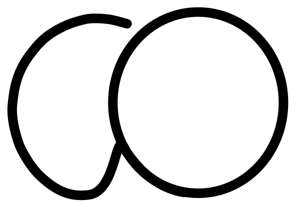
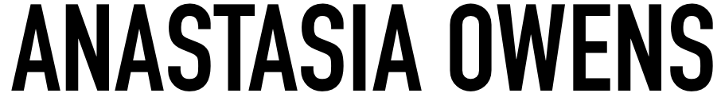

My Identity
Monogram
Wordmark
Visual Mark

Hi! So. Hopefully in a few more years I can fill this section up better, but you always have to start somewhere. I'm Anastasia Owens, an Interaction Design (UX) student from Belfast.
Why Interaction Design you ask?
I wanted to create. After studying fine art for GCSE's and A Levels, I wanted to move to a more digital platform. Computers are tomorrow, no matter if we like it or not, and I want to be part of it. Plus, nobody can spill coffee on your canvas, only your computer...